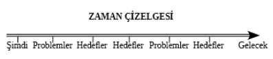

14. BÖLÜM - ZİRVE HARİTASI: KİŞİSEL GÖREV TANIMINIZ
HER MÜKEMMEL İŞİN BİR GÖREV TANIMI VARDIR. Bu, o şirket için işe giden her çalışana açıkça aktarılmış bir ifadedir. Görev tanımı, şirketin yaptığı her şeyi bir bağlama oturtur ve performansını değerlendirilebileceği kriterler belirler. The Seven Habits of Highly Effective People adlı kitabın yazarı Stephen Covey, birkaç yıl önce bireyler için büyük önem taşıyan şirket görev tanımını gündeme getirdi. Bu kavram büyük bir başarıydı. Bu fikrin temellerini Napoleon Hill çok eskiden atmıştı: Herkesten “belli başlı amaçlarını” yazmalarını istemiş ve her gün sürekli olarak bu amaçları gözden geçirmelerini sağlamıştı.
Bu fikrin amacı Zig Ziglar’ın sıklıkla belirttiği gibi ‘boş gezen bir genel değil de anlamlı bir özel’ olabilesiniz diye hayatınız için bağlam oluşturmaktır. Hayatınızı belirli idealler, hedefler ve değerler bağlamında yaşadığınızda günlük işiniz ve oyununuz konusunda daha odaklanmış ve düşünceli olma eğilimi gösterirsiniz. Bu bölümde şu ana kadar öğrendiğiniz insan ilişkileri için bir çerçeve oluşturma fırsatını yakalayacaksınız. Alıştırmaları uygularsanız insanları başarının zirvesine götüren becerilerde siz de ustalaşmış olacaksınız.
Şimdi nasıl etkin iletişim kuracağınızı biliyorsunuz. Sonraki adımsa gerçekten gelecek vizyonunuzu kazanmak ve hayatınız için görev tanımınızı yazmanızdır. Göreviniz nasıl biri olduğunuza ve bir iletişimci olarak etkinliğinize dayanır. En başarılı, tatmin edici hayatlarda yalnızca iletişim becerilerinde ustalaşmaktan çok daha fazlası mevcuttur. Bu insanlar tutkuyla, sanki bir görevdeymişçesine yaşarlar. Doğal ve rahat bir amaç hissiyle mükemmel günlük maceralarını sürerler.
Bir görevdeyseniz sizi hiçbir şey durduramaz. Görevde olmak, hayatta sizin için en önemli olan faaliyetlerle ilgilenmek anlamına gelir. Bu ayrıca hayatta en çok değer verdiğiniz insanlarla birlikte olmak demektir. Göreviniz gerçek bir yansımanızdır.
Hedef belirleme, hayattaki her aşamanın zirvesine çıkmak için gerekli bir basamaktır. Daha iyi sevgililer, daha iyi ebeveynler, iş dünyasında daha iyi insanlar olmak için uğraşmalıyız. Yan gelip yatarak yaşamak oldukça kolaydır değil mi? İlginç ve talihsiz bir biçimde hedef belirleme geniş bir hayatın amacı bağlamının dışında gerçekleşiyor. Bu, birey için sıkıntı yaratır. Kişisel olarak tatmin edici bir hayat oluşturmada kişisel görev tanımımız çerçevesindeki hedefleri kullanırız. Başka bir deyişle hedefleriniz görev tanımınızla uyumlu değilse o zaman yenilerini belirleyebilirsiniz.
Hayattaki amacınız kendinize bazı önemli sorular sorarak keşfedilebilir.
Haritanızı Çizmek
Lütfen aşağıdaki soruları verilen boşluklara yazarak yanıtlayınız. Gerekirse fazladan kâğıt kullanabilirsiniz. Sonra gelecek ‘keşif seansından’ faydalanmadan aşağıdaki iki soruya detaylıca cevap verin.
Hayatınızın amacı nedir?
Bilmiyorsanız hayatınızın amacı olması muhtemelen şey nedir?
Daha sonra hayatınızdaki en büyük dört amacı seçin. Başkasının sizinle ilgili çarpıttığı imajı değil de kendi amacınızı yazmanız çok önemlidir. Hayattaki göreviniz iyi bir ebeveyn, eş olmak kadar basit ya da ruhları kurtarmak için dünyayı gezen bir seyyah olmak kadar kapsamlı olabilir. Ya da ikisi de!
Amaç(lar)ınızı sizin için önem sırasına koyun. BU ÇOK ÖNEMLİ. Gerçek amacınız, hiçbir şey için ödün vermeyeceğiniz bir amaçtır. Birden fazla yazarsanız sizin için en önemli olanı yuvarlak içine alın. Bunu daha ilerileri okumadan şimdi aşağıda yapın.
Hayattaki amaç ve görev iki ayrı kavramdır. Yukarıda yaptığınız çalışma hayattaki kişisel görevinize aşağıda odaklanmanıza yardım edecek. (Yazar olarak hayattaki kişisel görevim ailem için sevgi ve mutluluk dolu bir yaşam kurmaya devam etmektir. İkinci görevimse insanların hayal kurmasına ve hayallerini geçekleştirmesine yardım etmek için zihinlerini ve kalplerini serbest bırakmalarını sağlamaktır.)
Hayattaki görevinizi bilmek çok güçlü ve aklınızı başınıza getiren bir keşiftir. Hayattaki göreviniz, yaşamanızın amacı ve nedenidir. Kimse size hayattaki görevinizin ne olduğunu söyleyemez. Sadece siz hayattaki görev(ler)inizi keşfedebilirsiniz. Çoğu insan hayattaki görevlerini açığa çıkarmadan bir ömür sürerler.
Hayattaki görevinizi, SİZİN kendiniz için seçtiğiniz görevi bildiğinizde kişisel bir görev tanımı yazabilirsiniz. Kişisel görev tanımınız aşağıdaki unsurları ve muhtemelen gerekli gördüğünüz şeyleri içerecek. Aşağıdaki cümleleri aklınıza gelen ilk şeyle cevaplayın. Aklınıza hemen iki cevap gelirse ikisini de yazın. Lütfen bunu şimdi yapın.
Bugün burada ve hayatta olmamın nedeni:
Hayattaki görevim:
Şunu yapabildiğimde elimden gelenin en iyisi olacağım:
Hayatıma gerçekten anlam kazandıran şey:
Hayatta her şeyden çok olmak istediğim şey:
Görev tanımımızı oluşturmadan önce bu beş ana konuya ek olarak kendimizle ilgili başka unsurları da göz önünde bulundurabiliriz.
En güçlü yönlerim nelerdir?
Başkaları benim en güçlü yönlerimin neler olduğuna inanıyorlar?
Hayatta para konusunda endişelenmememi sağlayacak bir şey yapabilseydim bu şey ne olurdu?
Başka insanlarda en çok hangi özellikleri seviyorum?
Ne (ve/veya kim) benim mutlu hissetmemi sağlıyor? Neden?
Hayatta benim için en önemli şey ne?
Dünyayı değiştirebilseydim bunun için neleri farklılaştırmayı isterdim?
En iyi yeteneklerim nelerdir?
Hayatta kim için en önemliyim? Başka kim?
Ölmeden önce şunları başarmak istiyorum:
Ölmeden önce şunları yapmak istiyorum:
En önemli değerlerim şunlardır:
(Birçok değer arasında zihninizi harekete geçirmek için birkaç tanesi listelenmiştir.)
Sevgi Arkadaşlık
Barış İstikrar
Neşe Bilgelik
Mutluluk Bilgi
Bağımsızlık Dinginlik
Güvenlik Tutku
Macera Sağlık
Formda kalma Cesaret
Seks Samimiyet
(Birçok insan değerleri inançlarla karıştırır. İnançlar değer değildir; değerleri takip ederler. İnançlar kendimizle ve etrafımızdaki dünyayla ilgili kabul ettiğimiz doğrulardır. Bazıları sınırlandırıcıyken bazıları kişisel gelişim için değerlidir. İnançlar ve değerleri sonra daha derinlemesine ele alacağız.)
En önemli değerlerim sırasıyla şunlardır:
Zirve Haritasını Detaylandırmak
Artık kişisel görev tanımınızın ilk halini tasarlamaya hazırsınız. Görev tanımı herhangi uzunlukta olabilir. Görev tanımınızı muhtemelen daha sonra değiştireceğinizi de belirtelim. Ayrıca bu kitabı tekrar okuduğunuzda hayatınızı tasarlayacak ve sizi zirveye götürecek tüm anahtarlara sahip olacaksınız. Hayatımızı yeniden tasarlamamızı gerektiren birçok olay meydana gelir. Hayatlarımızı yeniden tasarlarken gerçekteki kimliğimizin bizi yansıtan bir imaj veya görevimizin yansıması olduğunu kesin bilmemiz çok önemlidir.
Göreviniz olması size hayattaki genel bir yönü işaret eder. Hayatınızın fiziksel bir başlangıcı ve bitişi vardır. Bu iki olay kareli kâğıt üzerinde noktalar olarak işaretlenebilir. Bu iki nokta arasındaki boşluk zaman çizelgenizdir. Hayatınızdaki bütün diğer olaylar bu aralıkta meydana gelir. Bazı insanlar fiziksel yaşamdan önce ve/veya sonra sonsuz ruh veya manevi yaşam kavramına benzer bir şey ifade etmek için zaman çizelgesinin iki ucuna ok çizer.
Bu, metafor olarak kâğıt parçası üzerinde hayatta gideceğimiz yolu temsil eden bir ok çizmenizi sağlayacak. Sonsuz ok bizim ‘zaman çizelgemizi’ temsil eder. Bu çizgi gelecekteki görevimizin parçası olarak ulaşmak istediğimiz hedefleri yerleştirmemizi sağlayacak. Ok bize hedeflerin bir son olmadığını ama hayatın zaman çizelgesinde yol boyunca durduğunu hatırlatır.
Kişisel görev tanımınızı yazmak için yukarıdaki bütün kişisel bilgileri kullanın. Aşağıda mevcut alan görev tanımınızı ilk yazacağınız yerdir. Daha fazla yere ihtiyacınız olursa başka bir kâğıt kullanın. Bu yalnızca yazınızın ilk hali. Bütün kitabı okuduktan sonra başka bir görev tanımı yazacaksınız.
Hayattaki Görev Tanımım
Artık görev tanımınızı yazdığınıza göre, başkalarının değil gerçekten sizin düşüncelerinizi, isteklerinizi ve arzularınızı temsil ettiğinden emin olun. Birçoğumuz hayatlarımızı başkalarını memnun etmek için yaşıyoruz. Başkalarının mutlu olmasını sağlamak asil bir davranıştır ama başkalarını memnun etmek için yaşamak değildir. Bu sizin tasarladığınız hayata izin vermez ve mutlu olamazsınız.
Bir görev tanımı basıldığında hayat çizginizdeki tüm noktaların görevinizin önemli bir kısmını teşkil edeceğini hayal etme yeteneğine sahipsiniz. Aşılması gereken problemler de ortaya çıkacak. Problemler, görevinizi anlamada büyük önem taşırlar. Hayatınızla uyumlu hedefler belirlemek geleceğinizi tasarlamada gerekli ve önemli bir bölümdür.
Aşağıdaki zaman çizelgesi, hayatınızı şu andan yani görev tanımınızın başlangıç noktasından temsil eder ve sonsuz bir ‘sona’ doğru ilerler. Geleceğe doğru ilerledikçe problemlerin çıkabileceğini ve hedeflerimize ulaşmada başarılı olabileceğimizi beklediğimizin de farkına varmalısınız.

Görebildiğiniz üzere bir hayat çizgisinde yol boyunca problemler ve hedefler vardır. Hayat sadece hedeflere ulaşmaktan ibaret değildir. Aslında hedeflere ulaşmak için yaşanan bir hayat, problemleri aşmak için yaşanandan daha tatmin edici değildir. Hayatlarımızın büyük kısmı problem çözmekle geçer. Yol boyunca çıkabileceğini farz ettiğimiz problemler hangileridir?
Sevdiğimiz insanlar ölecek.
Sevdiğimiz insanlar büyüyüp bizi sevmeyecekler.
Değer verdiğimiz insanlar acı çekecek ve büyük sıkıntılarla karşılaşacaklar.
Finansal istikrara giderken bazı finansal engellerle karşılaşacağız.
Hayatta hazırlıksız olduğumuz kazalar meydana gelecek.
Değer verdiğimiz insanlar hastalanacak.
Biz hastalanacağız.
Daha birçok problem ve travma beklenmedik şekilde meydana gelecek ve bazıları adaletsizce önümüze çıkarılmış gibi düşüneceğiz. Bazı problemlerin kolay çözümleri vardır. Bazıları çok daha zordur. Her zaman önümüze problemler çıkacak ve geçeceklerini umut ederek kafamızı kuma gömmeyeceğiz. Problemlerin yanı sıra hedeflerimiz olacak. Hayattaki her hedeften sonra çözülecek daha fazla problem, ulaşılacak daha fazla hedef olacaktır. Hedeflere ulaşmanın ya da hayattaki sorunların üstesinden gelmeye çalışmanın asla sonu gelmez.
Hayatlarımızı tasarlamaya başlarken kendimizi engellere karşı hazırlama ihtiyacını da hesaba katabiliriz. Hazırlıklı olanlar ayakta kalacaklardır. Ayakta kalanlar başarabilirler.
Başarmak hedefleri, amaçları ve görevleri gerçekleştirmektir. Görevde başarılı olmak sorunların çıkmaması anlamına gelmez. Hayatta problemler hiçbir zaman eksik olmaz. Aslında hayatta hiç sorun olmasaydı başarı da olmazdı.
Şimdi amacımıza dair temel bir fikrimiz oluştu ve hayatımızı tasarlamak için bir ‘destek’ sundu. Hayatta hangi yöne gideceğimize dair bir hissimiz de oldu. Görev tanımımızın her zaman gözden geçirileceğini hatırlatmakta fayda var. Sizin için önemli olan şeye odaklanmayı sürdürebilmek için her zaman yaşamınızın zirvesinde kalın.